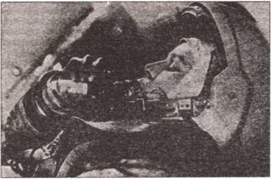

Забытый отряд космических амазонок
Неудачный полет Терешковой, как уже говорилось, поставил крест на карьере других кандидаток в космонавтки. К этой идее вернулись лишь много лет спустя, когда в космосе побывали первые американки.
И все-таки мне хотелось бы рассказать о нем подробнее. Хотя бы потому, что в руки мне попал уникальный материал — записки одной из дублерш Терешковой, Валентины Леонидовны Пономаревой. Они, как мне кажется, дают уникальную возможность познакомиться с этой страницей советской космонавтики, так сказать, изнутри.
Тем более что, насколько мне известно, сами записки Пономаревой, составившие целую книгу, изданы так и не были…
ОНИ БЫЛИ ПЕРВЫМИ. Итак, список женской группы отряда советских космонавтов в порядке дублирования: Терешкова Валентина Владимировна, Соловьева Ирина Баяновна, Пономарева Валентина Леонидовна, Еркина Жанна Дмитриевна, Кузнецова Татьяна Дмитриевна.
В списке космонавтов ВВС они сначала значились как рядовые, а потом им было присвоено звание младших лейтенантов. А В. В. Терешкова, как уже говорилось, дослужилась и до звания генерал-майора.
Далее, прежде чем предоставить слово самой В. Л. Пономаревой, несколько слов пояснения. Валентина Леонидовна попала в группу подготовки после окончания МАИ из закрытого НИИ, которым в то время руководил М. Келдыш, написав заявление на его имя и пройдя строжайшую медкомиссию, после которой из нескольких десятков кандидаток остались всего пятеро.
Под шифром «Ю.» значится муж Валентины Леонидовны. На руках его и бабушек, по существу, и оставался все годы подготовки маленький сын Пономаревых — Александр. (Валентина Леонидовна единственная из всех попала в группу подготовки, будучи, по ее собственному выражению, «замужней дамой» и имея маленького ребенка.) И, наконец, фрагмент записок, приведенных ниже, начинается с осени 1962 года.
«…? ноябре наша подготовка была, в основном, завершена, на декабрь назначили государственный экзамен, — пишет Пономарева. — Мы, конечно, очень волновались. Волновались за нас и ребята, выражая это больше в форме подначек: то в столовой масло со всех столов соберут и к нам поставят („А то вы хиленькие“), то скажут нашей официантке Вале, чтобы принесла добавку („А то они жалуются, что все время голодные ходят“), то еще что-нибудь придумают.
Экзамен прошел благополучно, мы все получили хорошие отметки. Помню, у меня получился „заскок“ — я вдруг забыла, что такое „надир“. Начала ерзать, подошел Гагарин: ‘Ты чего?» Я сказала. У него, видно, тоже заскок случился, пошел посмотреть в книжку. Пришел и доложил, что «надир» — это точка, противоположная «зениту», а «зенит» — точка, которая над головой. Потом мы над собой смеялись — элементарные вещи выскочили из головы!
После экзамена нас из слушателей-космонавтов перевели в космонавты и мы стали полноправными членами отряда. Потом, много позже, нам выдали удостоверение космонавта, где написано, что решением Межведомственной квалификационной комиссии нам присвоена квалификация «космонавт-исследователь». (Не путать со званием «Летчик-космонавт СССР», которое присваивалось после полета Указом Президиума Верховного Совета СССР. — С.С.)
Вскоре после экзамена приехал Н. Каманин, долго беседовал с нами «за жизнь». В частности, ставил вопрос — хотим ли мы остаться гражданскими лицами или стать кадровыми офицерами ВВС. Сказал — подумайте. Мы думали, совещались между собой и с ребятами. В конце концов решили, что нужно быть, как все, то есть военными. И нам вскоре присвоили первое офицерское звание — младших лейтенантов.
Принятое решение было правильным, потому что мы уже не были чем-то чужеродным в Центре и все, что касалось всех, касалось и нас.
И когда в 1969 году нашу группу расформировали за ненадобностью, вопрос о том, что с нами делать, хотя и возник, но решился в нашу пользу: нам предоставили должности в Центре. Денежное содержание, конечно, стало значительно меньше, но, во всяком случае, второй раз кардинально менять свою судьбу нам не пришлось. Другой вопрос, как это сказалось на жизни каждой впоследствии. Что было бы, если бы… Но этого мы никогда не узнаем. К счастью.
Между прочим, о том, что Терешкова имеет офицерское звание, после ее полета в прессе не сообщалось. Говорилось, что корабль «Восток-6» пилотирует гражданка Советского Союза Валентина Владимировна Терешкова. Ребята по этому поводу строили смешки, долго ее еще называли — «гражданка Терешкова». Конечно, для них привычнее было «майор Гагарин» или «капитан Титов». Наверное, они и ощущали себя сначала офицерами, а уж потом гражданами своей страны. Да и вообще — ощущали ли мы все себя тогда гражданами? Скорее всего, просто об этом не думали.

Валентина Терешкова ест из тюбика на тренировке.
Нужно признаться, что настоящими, «всамделишными» офицерами мы так и не стали, хотя и прослужили более тридцати лет. Случалось нам, и не раз, поступать не так, как положено военным людям (пример — мои «подходы» к Каманину через головы непосредственного начальства). Ребята тогда говорили: «Ну, профсоюз развели!»
Подготовку мы закончили к назначенному сроку, но запуск отложили: что-то было не готово — то ли корабль, то ли скафандр, — и в начале декабря нас «прогнали» в отпуск. Ирина поехала в Свердловск, навестить маму и родню; ее отпустили со скрипом и только благодаря ее настойчивости. А нам четверым командование раздобыло путевки в санаторий на Черноморском побережье Кавказа, в Гаграх.
Я заявила, что без семьи не поеду, и пришлось отцам-командирам напрягаться, так как детей (а Саньке было четыре с половиной года) в санатории тогда не принимали. Каким-то образом дело уладилось, и, приехав, мы даже вытребовали право водить его в столовую.
Ребенок в столовой санатория — это было по тем временам ЧП. Но Валя, Таня и Жанна, которые ходили по этому поводу к директору санатория, одержали победу. Я думаю, они ошеломили его быстротой и натиском, а если еще и говорили все сразу, то победа была обеспечена заранее. Не знаю, что они ему говорили, так как нам было приказано «не раскрываться», но, видимо, при санатории был кагэбэшник, который по своим каналам получил нужную информацию.
Я не знала тогда, да мне и ни к чему было, что то был санаторий ЦК КПСС. Отдыхали в нем, как сказали бы теперь, партийные функционеры довольно высокого ранга, народ все положительный и солидный. И вдруг мы: четверо совсем молодых женщин (Танька — так и вовсе девочка), а при них один мужчина не то среднеазиатской, не то кавказской внешности — смуглая кожа, черные глаза и волосы черные-пречерные — и один маленький ребенок. Причем не поймешь, кто его мама: все таскают его на руках, играют и кормят и все всегда вместе.
И вот кто-то из отдыхающих, я думаю, среднеазиатских партначальников, решил, что «Ю.» — какой-нибудь молодой бей с семьей, четырьмя женами и ребенком.
«Ю.» потом, уже в Москве, рассказал нам, что однажды к нему подошли двое соответствующей кавказско-азиатской наружности и попросили продать одну из жен. Особенно им понравилась Терешкова.
Реакцию «Ю.» можно себе представить, но «покупцы», как говорила одна моя знакомая, решили, что он просто-напросто испугался. «Ты только согласись, — уговаривали они, — и все будет шито-крыто, никто никогда ничего не узнает и следов не найдет».
Но «Ю.» не согласился, и Валя осталась с нами. Сейчас мы иногда вспоминаем этот эпизод и смеемся, а «Ю.» после полета сказал Валентине: «Жалко, что я тебя тогда не продал…»
А законы чести между беями, значит, существуют: не получив согласия, они Валентину не увезли, красть не стали. Хотя, наверное, все мы были «под колпаком» и из этой затеи все равно ничего бы не вышло.
В Гагры я тогда попала второй раз в жизни. А первый — это было мое свадебное путешествие. Мы с «Ю.» поженились на пятом курсе, диплом я защищала уже замужней дамой. Темой моего дипломного проекта был ядерный ракетный двигатель. Это был первый такой диплом на нашем факультете — недаром же я занималась в кружке высотных полетов и изучала труды Циолковского! Консультант у меня был очень серьезный — Н. Пономарев-Степной. Теперь он академик, а тогда был доктором физико-математических наук, работал в Курчатовском институте, приезжал к нам в дипломку на консультации персонально ко мне.
Посчитать реактор на логарифмической линейке я, конечно, не смогла, но кое-что мы с ним придумали. Внизу в нашем корпусе вывешивались списки, кто сегодня защищается. Стою накануне своей защиты возле этого списка и слышу разговор двух «салаг»-младшекурсников. «Слушай, — говорит один другому, — когда же будет Ковалевская? У нее ЯРД, интересно было бы поприсутствовать. Последний день сегодня, а ее все нет…»
А дело было в том, что, выйдя замуж, я сменила фамилию, а по радио, естественно, об этом не объявляли.
На следующий день после моей защиты мы и отбыли в свое свадебное путешествие — отец «Ю.», Анатолий Андреевич, сумел раздобыть нам путевки в дом отдыха на Черном море, неподалеку от Сочи.
Остановка электрички возле него, как и сам дом, называлась «Рабис». Что означало «дом отдыха работников искусств». Вот же придумывали названия!
После сдачи госэкзамена в Центре жизнь наша стала поспокойнее. Мы были заняты тем, что «поддерживали форму». Проводились тренировки и испытания, но они уже не вызывали такого духовного и физического напряжения, как раньше. И времени свободного стало больше. В моем дневнике записано: «Жизнь пошла удивительная — сплошная самоподготовка. Самоподготавливаемся с подушкой в обнимку — спим после завтрака, после обеда и перед ужином».
Конечно, это преувеличение, но после обеда мы действительно позволяли себе вздремнуть, благо кровати наши были неподалеку от рабочих мест.
Как видно из моих дневников, уже в то время мы начали задумываться: кто же полетит? И уже тогда, не знаю теперь даже, почему, становилось ясно, что полетит Терешкова. У меня написано, например, так: «Из штаба дошли до нас слухи, что она лучше всех». И это служило для меня иногда источником плохого настроения. А вообще, как свидетельствуют мои дневники, полосы жизни случались разные: «…Получила от „Ю.“ очень хорошее письмо. И можно ни о чем не думать и забыть все на свете!»
«…Центрифуга идет у меня неважно. Сообщила „Ю.“ — ему меня жаль. Написал — будь мужчиной! Да разве в том дело? Я и была мужчиной. По дороге от кабины к медикам уже пришла в себя. Они очень внимательно меня разглядывали, спрашивали: ну как? У меня на сердце скребли кошки, я готова была разреветься, как ревет Санька — громко и отчаянно, но я улыбалась и говорила: „Все хорошо“. Тогда они еще раз спрашивали: „Ну как?“ — и я опять говорила: „Все хорошо“. Тогда они — каждый — смотрели на меня изучающе и скептически мычали: „Да?…“»
«…А мой парниша пошел в сад… У меня сжимается сердце, когда я думаю: как они там? Бедные мои, милые мои, несчастные мужички!..» Вот так и шла жизнь.
Перед самым Новым, 1963 годом нашего полку прибыло — приехали новые космонавты, 15 человек; среди них были уже не только летчики, но и инженеры; все военные. Этот отряд стал называться вторым. Первый, гагаринский отряд стал теперь широко известен, названы все имена, а история второго отряда еще ждет своего Ярослава Голованова. Конечно, в истории космонавтики это важные вехи — образование первого и второго отрядов космонавтов. И во всех докладах и статьях по истории Центра они всегда упоминаются. А наша группа будто бы провалилась в щель между ними. Словно одна Терешкова готовилась к космическому полету. Татьяна однажды, осердясь, высказала Береговому свое возмущение. Тот сказал: «Действительно». И нас вписали в Историю.
Весной нас возили на космодром — смотреть запуск какого-то автоматического аппарата. Нам показали все: и монтажно-испытательный корпус, и подъездную железную дорогу, по которой на специальной платформе в лежачем положении движется ракета, и бункер, откуда ведется связь. И все такое огромное — какие-то циклопические сооружения. Особенно меня поразил котлован — как пропасть. Если представить ревущее в нем пламя, то совсем делается жутко.
Конечно, мы смотрели на все «квадратными глазами», так же, как местные люди смотрели на нас… Вместе с нами летел на космодром Келдыш. Точнее, мы летели вместе с ним, наверное, на его самолете. Нас ему представили. Разумеется, мы очень смущались, боялись показаться тупыми.
Мстислав Всеволодович задавал нам обычные вопросы: как жизнь, какие трудности? В таких случаях всегда возникала задача найти правильный ответ. Ведь тот, кто спрашивал, обычно и не ждал искренности. Ему было интересно: что ответят? Такая велась игра: каков вопрос — таков ответ. Наверное, это и были ростки двоемыслия, хотя тогда это нам казалось естественным. Вот и на этот раз Мстислав Всеволодович спросил, читаем ли мы художественную литературу. Я не успела открыть рот, как девчонки дружно начали говорить, что нет, некогда, надо читать техническую литературу и т. д. Келдыш внимательно посмотрел на нас, улыбнулся и как-то грустно сказал: «Надо читать. Надо уметь находить время». Я до сих пор помню его улыбку.
Можно сказать, то была моя вторая встреча с ним. Первая была в его кабинете, когда я принесла ему заявление: «Хочу в космос!» Но она прошла как-то мимо моего сознания — я очень тогда волновалась… Конечно, я видела его много раз у нас в институте, когда он поднимался в свой кабинет, на второй этаж, по лестнице. Но разговаривать с Келдышем вот так, можно сказать, персонально мне пришлось в первый раз. И у меня осталось впечатление огромного человека, погруженного в дела и заботы не представимых для меня масштабов.
Нас потом представляли многим высокопоставленным лицам, даже Хрущеву, но ощущения того, что я соприкоснулась с огромным и необычным, у меня больше не возникало.
Конечно, мы боготворили СП (С. П. Королева. — С.С.); таким безоговорочно и без сомнений было отношение к нему ребят и всех в Центре. Хотя он был иногда недосягаемо высок, но все же свой. Мы знали, что он очень много времени уделял ребятам, особенно до полета Гагарина да и после, и нам тоже. Он бывал в Центре, а когда мы приезжали к нему «на фирму», почти всегда находил время побеседовать с нами. Он учил нас не только, вернее, не столько ракетной технике, сколько жизни. И слово его было законом.
Помню его внимательный взгляд, глаза, смотрящие прямо в душу. У него было очень доброе лицо, как мне казалось, немного грустное. Говорят, он бывал и зол, и резок, — мне ни разу не доводилось видеть его таким. Еще говорят, что он не жаловал женщин на производстве и старался, чтобы специалисты на полигоне были мужского пола. Однако на себе мы этого никогда, ни разу не ощутили. С нами он всегда был корректен, внимателен и добр.
Планировалось, что наш полет будет групповым, то есть сначала запустят Быковского, затем, примерно через сутки, запустят Терешкову. Параметры орбит будут близкими, и корабли в соответствии с законами орбитального движения будут то сходиться, то расходиться. Таким образом, если бы хоть один из кораблей мог маневрировать, можно было бы осуществить сближение и стыковку.
Но можно ли было называть полет двух неманеврирующих аппаратов групповым только потому, что их орбиты, образно говоря, были совсем рядом? Мы же не называем групповым движение двух железнодорожных составов по соседним путям, даже если они движутся в одну сторону, время от времени обгоняя друг друга! Я все-таки летчик какой-никакой, и, что такое групповой полет, очень хорошо знаю. Это когда вцепляешься взглядом, всем своим существом в консоль или в хвост ведущего и стараешься предвосхитить любое его намерение, действовать так, чтобы не оборвалась тонюсенькая ниточка, которая как бы связывает две машины. Когда летали Николаев и Попович, эйфория была так сильна, что подобный вопрос просто не пришел мне в голову. А сейчас возник. Я попыталась задать его окружающим, но меня не поняли.
Не знаю, кто, кажется, Каманин высказал мысль сделать полет полностью женским. Как красиво — две женщины на орбите! Незадолго до назначенной даты полета в Центре было устроено совещание по этому поводу. Присутствовали космонавты, специалисты и командование Центра, представители разработчиков. Идея поддержки не нашла. Космонавты очень резко выступали против. Конечно, это можно понять: вот ты уже готов к полету, вот он, твой корабль, и вдруг его надо отдать?! Я выступала чуть ли не единственная из всех в поддержку идеи, говорила, что полеты в космос будут всегда и мужчины будут летать до конца времен, что после «Востока» будут другие корабли, а вот следующего женского полета не будет очень долго, а мы уже подготовлены, и это обошлось государству в копеечку. Я храбро сражалась, но — увы!
Уже перед самым отъездом на космодром было заседание Государственной комиссии. Решался один вопрос: кто полетит? Конечно, мы все уже знали и все-таки волновались. Я думала: а вдруг случится чудо? Ведь бывает же! Может быть, так думали и другие? Не знаю, мы никогда об этом не разговаривали. Комиссия — много солидных высокопоставленных людей (погоны с большими звездами и золотое шитье военных, строгие костюмы гражданских) — заседала в одной из комнат профилактория, разместившись за сдвинутыми вместе столами, накрытыми ради торжественного случая красной материей. Там были Келдыш, Королев, Каманин и другие. Очень Важные Лица. (Я пишу заглавные буквы не ради иронии, а потому, что то действительно были первые лица государства.)
Сбоку у стены были поставлены стулья для нас, закончивших подготовку. Мы, девчонки в форме младших лейтенантов ВВС, сидели ни живы ни мертвы, ожидая решения. СП начал почему-то с меня. Он спросил, будет ли мне обидно, если в полет назначат не меня. Я встала и с нажимом сказала: «Да, Сергей Павлович, мне будет очень обидно!» Наставив на меня указательный палец, СП сказал: «Правильно, молодец! Я бы тоже так ответил. И мне было бы очень обидно». Он говорил тоже с нажимом, выразительно. Потом помолчал немного, посмотрел на каждую долгим внимательным взглядом и сказал: «Ну, ничего, вы все будете в космосе!» Не сбылось. К несчастью! Или к счастью? Тогда ответ был однозначным. Теперь, спустя столько лет, все это не кажется мне таким уж простым и ясным. Что я приобрела бы и что потеряла? Приобрела бы — тогда — весь мир. Впоследствии, вероятно, роскошный кабинет в каком-нибудь старинном особняке и все, что при этом полагается. В том числе — жесткую необходимость. А потеряла бы — свободу. Свободу жить так, как хочется, и принадлежать себе и семье.
…Заседание было коротким, и чуда, конечно, не произошло — командиром корабля была назначена Терешкова, дублером № 1 — И. Соловьева, дублером № 2 — В. Пономарева. Как я помню из объяснений Карпова, двух дублеров, а не одного, как у мужчин, назначили «ввиду сложности женского организма».
Все мы держались спокойно и старались сделать вид, что нас это не особенно и затрагивает, вроде так и должно быть. Надеюсь, что нам это удалось хоть в какой-то мере. Я думаю, что все мы находились в тот момент в состоянии эмоциональной заторможенности.
Впоследствии меня (наверное, и остальных тоже) часто спрашивали: почему была выбрана Терешкова? Что мы можем сказать? Е. Карпов перед стартом говорил с нами на эту тему, со мной и с Ириной по отдельности.
Ирине он сказал, что ее не назначили в полет потому, что тут нужен человек контактный, умеющий общаться с людьми, ведь космонавты сразу после полета становились общественными деятелями, много ездили по Союзу и другим странам, выступали перед людьми, и эти выступления имели огромный резонанс. А Ирина по характеру несколько замкнута. (Кстати, я услышала от нее об этом разговоре с Карповым много позже, едва ли не четверть века спустя, когда готовилась первая публикация о нашей группе в «Работнице».)
А мне Евгений Анатольевич сказал, что по политическим соображениям должен лететь «человек из народа», а я имела несчастье происходить из «интеллигенции».
Я понимаю, что он проявил такт и мудрость, постаравшись нас утешить, и каждой нашел, что сказать. Лично мне утешение нужно было как воздух, чтобы сохранить жизненную устойчивость — невыносимо было бы подумать, что к такому исходу событий привели собственные оплошности. А так можно было полагать, что в игру вступили силы, которые выше нас. На самом же деле причин и мотивов такого решения мы (я, во всяком случае) не знаем. Может быть, были и какие-то другие, более глубокие причины. Кстати, лично я вовсе не уверена, что мне была бы по плечу та роль, которую играла и играет в общественной жизни Терешкова.
Однажды мне пришлось провести полдня в ее рабочем кабинете в Союзе советских обществ дружбы (ССОД) с зарубежными странами. Я пришла по своим личным делам, но нам все никак не удавалось поговорить: то звонил телефон, то кто-то приходил…
Она сказала: «Сиди, я сейчас освобожусь». Я сидела, смотрела, слушала. Поначалу мне было очень интересно — дела были разные. С мэром Костромы, к примеру, она обсуждала городские проблемы. Основная идея разговора — как ССОД может помочь возрождению Костромы и других российских городов. Речь шла о создании малых, совместных, акционерных и каких-то еще предприятий, чтобы заработать деньги для города. Потом был большой разговор уже с другими людьми об организации советско-французского радиоканала, решались вопросы финансирования, разрабатывалась стратегия и тактика решения проблемы. Между этими двумя большими разговорами (и в процессе тоже) попутно решалась еще масса текущих дел. У меня начала кружиться голова…
На космодром мы прилетели в последних числах мая. Начался заключительный этап подготовки. Мы (в основном, конечно, Валя) общались со множеством людей: среди них были и медики, и специалисты по космической технике, и корреспонденты. Разговаривали с нами, конечно, С. Королев и М. Келдыш. Командиром «Востока-5» был назначен Быковский, дублером — Волынов. Прилетели космонавты — Гагарин, Титов, Леонов, Николаев, Хрунов и другие. Был среди них и Вадим Волков (почему его так звали, сокращая имя Владислав, не знаю), но тогда еще в качестве специалиста-разработчика.
Подготовительная работа шла каждый день — готовили корабли, бортовую документацию, проводили занятия с космонавтами. Мы ездили в МИК, наблюдали за стыковкой корабля с ракетой-носителем, последними проверками и испытаниями. Нужно было заполнять бортжурналы — расписать программу полета на каждый день, чтобы в полете занести туда фактические данные экспериментов и наблюдений. Валя занималась этим со всем возможным прилежанием, а мы с Ириной — спустя рукава. Конечно, когда знаешь, что это не нужно, откуда взяться энтузиазму?
Вообще приходится признать, что мы вели себя по отношению к Вале не лучшим образом. Позиция наша, а вернее, поза была, прямо сказать, не очень красивой. Этакая бравада («А нам все равно!»). Понятно, этим прикрывалась «зубная боль в сердце». Мне и сейчас стыдно и горько вспоминать, но факт есть факт: мы оставили Валентину в одиночестве. Вместо того чтобы помогать ей, поддерживать — что по-человечески было естественно, — мы позволяли себе иронизировать, не очень-то с ней общались, да и мелкие стычки бывали. Не хватило души!
Не знаю, насколько она это ощущала, может быть, так была погружена в состояние ожидания предстоящего ей нелегкого и опасного дела, что и не замечала мелких дрязг. Хорошо еще, выручила Жаннета, она все время держалась рядом — и на занятиях, и в свободное время, и Валя была не одна.
Но все равно мы с Ириной должны были создать ей душевный комфорт в последние дни перед стартом. Несмотря на то что каждая из нас считала, что лучше подготовлена. И вообще более достойна. А если бы катастрофа? Как бы мы себя тогда чувствовали?…
Великодушие и благородство — очень трудные качества; хорошо, если они есть от природы. А если нет — им надо учиться. Что не очень приятно и трудно, конечно.
…К чести Валентины, следует сказать, что когда она вернулась из полета, то бросилась к нам с распростертыми объятиями — выходит, зла не держала.
«Самым тяжелым для меня был день, когда проводилась проверка скафандров. Космонавта одевали в его боевой скафандр (мне очень нравилось, что его так и называли „боевой“), усаживали в кресло, подключали к коммуникациям, и специалисты проводили свои замеры и проверки. При такой проверке, кстати, обнаружилось, что скафандр Терешковой не герметичен, так что в полет она пошла в Иринином, а Ирина в день запуска надела мой. Ну, а я в тот день по программе не должна была „одеваться“, так что могла обойтись без скафандра, цветастым летним платьем. И оно, мое платье, оказалось запечатленным в тогдашней кинохронике. Одно платье, без головы — так нас тогда снимали, ведь все мы были суперсекретными особами.
Но все это было после. А вот в тот день я сидела в скафандре с поднятым стеклом гермошлема и бурей в душе. Слезы кипели у самых глаз, горло перехватил спазм. Не знаю, из каких распоследних сил я держалась: отвечала на вопросы, участвовала по мере надобности в протекающей процедуре. Подошел СП, хотел, видимо, что-то спросить или, может, ободрить: у тебя, дескать, все еще впереди. Не горюй! Но, заглянув мне в глаза, понял, что одно его слово может нарушить хрупкое равновесие, в котором я кое-как удерживалась, постоял около меня молча, потрепал по плечу и ушел. И мне как-то удалось взять себя в руки. Если бы он сказал хоть слово, слезы, наверное, хлынули бы не ручьем, а целым водопадом!
За всю свою не короткую теперь уже жизнь я не помню такого острого и мучительного состояния, такого глубокого отчаяния, хотя в жизни много чего еще случалось. А что у нас все впереди — на самом деле СП так не думал: на другой день у меня состоялся разговор с ним о нашем будущем. В дневнике осталась запись: „Разговор с СП поверг меня в глубокое уныние: „Я не вижу в этом перспективы“. Все правильно, и я не вижу в этом перспективы. Но для нас это смерти подобно!..“
По заведенному распорядку на космодроме проводилось еще одно заседание Государственной комиссии. Оно носило скорее торжественный, чем деловой характер. Ведь все уже было решено и принятое решение никогда не менялось. (Такое случилось, по-моему, единственный раз, когда экипаж Леонова, Колодина и Кубасова был заменен дублирующим. Поле гели Добровольский, Волков и Пацаев. И не вернулись…) Несмотря на то что все было известно заранее, все очень волновались — торжественность обстановки действовала. Огромный кабинет, масса народу… Седины академиков, маршальские звезды, юпитеры, жужжание кинокамер, щелканье фотоаппаратов — было отчего закружиться голове. Как я сейчас понимаю, то был ритуал, торжественная месса. Мы сидели за длиннющим столом, каждой клеточкой ощущая торжественность момента.
Выступления были краткими. Первое сообщение сделал Королев. Он доложил Государственной комиссии, что техника готова, и просил разрешения вывезти ее на стартовую позицию. Потом Каманин представил комиссии космонавтов и просил утвердить командиров кораблей и их дублеров.
Помню, были буря аплодисментов и море света. Фотоаппараты щелкали неистово. Это и другие подобные заседания мелькали потом в кадрах кинохроники. Была еще одна традиционная встреча, столь же торжественная, — представление космонавтов стартовой команде. Вот это было по-настоящему важно и волнующе: те, кто делал технику (а сколько трудов и души в нее вложено!), смотрели на людей, в руки которых ее передавали. А те, кто должен был лететь, смотрели на тех, кому они вверяли свою жизнь. На эту встречу приходили все, кто не был занят на работе. Мы стояли лицом к стартовой команде, начальники — гражданские и военные — сзади. Выступления были краткими и ритуальными: разработчики говорили, что техника готова к полету и надежна, космонавты благодарили за оказанное доверие и честь, заверяли, что все сделают, как надо.
Волнение выходило за всякие пределы: Жанна, стоявшая сзади, сказала потом, что у Валентины в самом буквальном смысле слова дрожали колени. Были еще другие встречи с людьми, от которых остались следы в виде любительских фотографий. Одна из них, попавшая мне в руки десятилетия спустя, очень любопытна: мы стоим перед ракетой в разноцветных платьях, чуть сзади и сбоку — СП. В руках у нас цветы и какие-то бумажки, может быть, с текстами выступлений. Валя смотрит вперед решительно и строго, а мы с Ириной уткнули носы в букеты, и выражение лиц — кислое-прекислое.
В один из предстартовых дней мы поднялись на лифте к кораблю. С нами были С. П. Королев и Е. А. Фролов. Высота ужасная, а конструкция вокруг ракеты состоит, кажется, из одних дырок — смотреть страшно! А ведь стартовая команда на этих ажурных опорах передвигается вверх-вниз и работает. Мне же и лифт показался весьма хлипким сооружением. Если не смотреть на ракету, то кажется, что он ползет вверх будто бы в пустоте, словно мы едем в небо. На верхнем мостике — так, кажется, называется самая верхняя площадка обслуживания — мы вышли, и СП представил наш корабль. Валя и Ирина остались в кабине. Валя — долго, внимательно оглядывая приборы; Ирина лишь пробежалась взглядом по знакомому до последней кнопочки интерьеру. А я от такой чести отказалась.
Было еще одно тягостное для меня мероприятие: запись предстартового обращения командира корабля „Восток-6“ к советскому народу. Текст был подготовлен заранее, надо было прочесть его с выражением перед микрофоном. Я читала скороговоркой, глотая окончания слов. Перечитывать не заставили — сошло и так.
Запуск Быковского откладывался из-за повышенной солнечной активности, ожидание затягивалось. Мы с Ириной особенно-то и не брали это в голову, а для Валерия и Вали ожидание, наверное, было тяжким. Тогда на стартовой позиции я читала какую-то книгу о Джеке Лондоне. Наверное, „Моряк в седле“. И она давала мне богатую пищу для размышлений. В дневнике, например, осталась такая запись: „Он не умел прислушиваться к строгому голосу дисциплины“, — это Джек Лондон как бы про меня писал. Я сейчас не знаю, что со мной будет через месяц. Не знаю, где я буду, чем займусь…»
Солнышко наконец успокоилось, и день запуска Быковского был определен. По традиции они с Борисом Волыновым уехали ночевать в домик космонавтов. Вечер без них был какой-то грустный: мы волновались и тревожились накануне События. С Борисом мы очень сдружились, наверное, потому, что пребывали в одинаковом, дублерском положении…
Потом настал и наш день. Валя и Ира уехали в домик космонавтов, а мы остались в гостинице. На стартовую позицию ехали в специальном автобусе. Народу было очень много, кто стоял, кто сидел, все смеялись и балагурили. На стартовой позиции все было очень торжественно. Валентина рапортовала о готовности к полету, после объятий и пожеланий ее проводили к лифту. Лифт полз вверх целую вечность. По традиции она помахала нам рукой с верхнего мостика. Начался заключительный этап подготовки, нам возле ракеты делать было больше нечего, и мы поехали на смотровую площадку.
В стереотрубу было видно, как отошли фермы обслуживания, словно раскрылись лепестки гигантского цветка. Этот кадр кинохроники стал символом нашего века, и меня он всегда волнует… Я видела, как отошли «боковушки», а потом Валя стала точкой и пропала в небе. Вскоре мы услышали ее голос «оттуда». Ныне это стало обыденным, а тогда трудно укладывалось в голове, в особенности, быть может, потому, что все было почти что с тобой…
Вечером было торжественное заседание в домике космонавтов. Конечно, нас задарили цветами и усадили в президиум. Гагарин предложил мне выступить, но я отказалась. Тогда он выступил сам, и меня поразило, как он мгновенно нашел контакт с аудиторией. Речь его была легкой, с блестками юмора, люди смеялись и хлопали, а я думала, что никогда не смогу научиться выступать так просто и блестяще.
НЕОБХОДИМОЕ ПОСЛЕСЛОВИЕ. Что было потом, вы, верно, уже наслышаны по официальным источникам, книгам прошлых лет. Личные судьбы В. Л. Пономаревой и других дублерш сложились по-разному, но, в общем-то, достаточно обыденно. Они остались работать в Центре, Валентина Леонидовна поступила в аспирантуру, закончила ее, защитилась. Последние годы перед пенсией работала в Институте истории естествознания.
Той же осенью, в 1963 году, все девушки из группы подготовки повыходили замуж. Открыла парад свадеб, как это и положено командиру, Валентина. О ее свадьбе с космонавтом Андрияном Николаевым в свое время говорили и писали достаточно много. Была на ее свадьбе и B. Л. со своим «Ю.».
Детей, впрочем (кроме В. Терешковой), решились заводить лишь после окончательного расформирования группы. Все думали: «Вдруг начнется снова подготовка, а я…» Зато уж когда надежда исчезла, то все (в том числе и Валентина Леонидовна еще раз) родили детей-погодков, 1970–1971 годов рождения.
Группу, кстати, расформировали окончательно при довольно интересных обстоятельствах.
Где-то в 1966 году по инициативе Каманина снова было возник вопрос о «женском» полете. Однако Королев отреагировал отрицательно: «Чтобы я еще раз связался с бабами!..» Тем не менее, как пишет Каманин, полет экипажа Соловьевой-Пономаревой мог вызвать широкий резонанс в мире. И… что уж там греха таить… прикрыть на какое-то время наметившееся отставание советской космонавтики от американской.
Однако 14 января 1966 года скончался С. П. Королев. Бывших дублерш хотя и задействовали по новой программе подготовки, но до конца ее не довели. Началась эпопея с лунной программой, и все усилия были переключены на нее. А затем пошла полоса неприятностей. 23 апреля 1967 года в испытательном полете на экспериментальном «Союзе» погиб В. М. Комаров. Залихорадило лунную программу; стало понятно, что за американцами мы не поспеваем…
«Вот так мы и дожили до осени 1969 года, — пишет по этому поводу далее в своих записках В. Л. Пономарева. — И по-прежнему нам ничего не светило. Однажды приехал Каманин и предложил написать письмо в ЦК КПСС, вспомнив, к слову, о некой парашютистке, которой в свое время не давали установить рекорд (наверное, как и нас, не пропускали мужчины). Тогда она пошла на прием к Калинину, и все устроилось.
Мы согласились и стали писать. Текст письма составляла я и очень хорошо помню. Оно начиналось обращением; „Товарищ Первый секретарь ЦК КПСС!“ Далее говорилось, что мы долгое время находимся в Центре подготовки космонавтов, проходим положенные тренировки и испытания, поддерживая форму, готовые в любой момент приступить непосредственно к предстартовой подготовке. Говорилось, что на наше обучение и подготовку государство затратило большие средства, и было бы обидно, если эти траты оказались напрасными…»
И так далее, в том же духе. Все письмо подписали и отправили, несмотря на реакцию мужа Валентины Леонидовны.
«„Ю.“ сказал: „Не пишите, это провокация. Пока вы сидите тихо, вас никто не тронет — вы номенклатура. Но если высунете нос, будет повод вас убрать“. Я не поверила, что кто-то может сознательно устраивать провокацию. Зачем? „Ю.“ объяснил просто: Каманин был инициатором создания нашей группы, теперь мы не нужны, и он хочет исправить свою ошибку. Но я была настолько тупа, что меня это нисколько не убедило: почему ошибку нужно было исправлять таким сложным способом? „Ну, смотрите, — сказал „Ю.“, — после этого письма вас отчислят“. Так и вышло: нас вызвали на Старую площадь и сказали, что очень ценят наше стремление послужить Отчизне, но в данный момент она в том не нуждается».
Далее женщин спросили, хотят ли они остаться в армии и Центре или стремятся в дальние дали. Никто в дальние дали не захотел, и всем нашли какие-то должности в Центре подготовки космонавтов. И лишь недавно Валентина Леонидовна узнала, что Шаталову, возглавлявшему тогда отряд космонавтов, пришлось выдержать тяжелые бои с Главкомом ВВС Кутаховым, который хотел вообще уволить бывших космонавток из армии.
Идея снова «запустить женщину» возникла лишь многие годы спустя у В. П. Глушко, бывшего тогда Генеральным конструктором НПО «Энергия». Он сделал новый набор женщин в отряд гражданских космонавтов. Так на горизонте появились Светлана Савицкая, летчица, чемпион и рекордсмен мира, и другие представительницы нынешней космонавтики.
«А перед нами дверь в Космос захлопнулась навсегда», — заключает свою рукопись В. Л. Пономарева.
ПРОДОЛЖЕНИЕ СЛЕДУЕТ? Не очень удачно сложились и судьбы других «космических амазонок» — всех тех, кто, так или иначе, оказался волею судеб связанным с этим отрядом.
Чтобы не повторяться, будем краткими.
Всем ныне известны наши покорительницы космоса — вслед за Валентиной Терешковой на орбиту слетали Светлана Савицкая и Елена Кондакова. Но мало кто знает, что всего в стране к полету в космос готовились 17 женщин. И судьба многих из них вовсе не была звездной.
После расформирования первой женской группы прошло 15 лет, прежде чем руководство пересмотрело свою точку зрения. После того как в 1978 году США набрали в астронавты первых женщин, СССР не мог оставить этот шаг без достойного ответа. В 1979 году сначала по секретным институтам, а потом и по открытым научным организациям вновь начались усиленные поиски кандидаток в космонавтки.
«В полуприказном порядке меня пригласили пройти медкомиссию. На обследование собрались толпы женщин, но никто из нас не знал, зачем мы здесь», — вспоминает ведущий научный сотрудник Института медико-биологических проблем (ИМБП) Елена Доброквашина.
Женщинам не объяснили, зачем их подвергают различным медицинским тестам, почему столь большое внимание уделялось «моральному облику» — в частности, им запрещалось появляться в ресторанах, где могли оказаться иностранцы. Не сказали, почему не разрешалось иметь детей и делать аборты.
Лишь тем, кто прошел жесткий отбор до конца, объяснили: столь строгая конспирация связана с работой в космосе. И многие кандидатки решили бросить свою прежнюю работу, чтобы вплотную заняться новой, даже не задаваясь вопросом: «А почему, собственно, все это — тайна?» Значит, так надо, полагали советские люди. И добровольно шли на изрядные жертвы.
Скажем, та же Доброквашина, будучи практикующим врачом, собиралась писать докторскую диссертацию. Но решила бросить все и рискнуть. «У меня всегда в характере была авантюрная жилка», — говорит она.
Впрочем, желание претенденток полететь в космос, отменное здоровье и высшее образование оказались вовсе не главным в отборе будущих космонавтов. «Основное требование — безупречная анкета», — убеждена Доброквашина, которой пришлось пройти десятки собеседований, дать множество расписок и даже пообещать не иметь детей, потому как в любой момент нужно было быть готовой лететь в космос, а дети привязывают к Земле. «Для меня самое сложное оказалось пройти комиссию ЦК партии, где обсуждалось мое персональное дело о разводе», — продолжает Доброквашина, которая к моменту набора в космонавты уже восемь лет была замужем во второй раз.
Лишь семь женщин (два инженера и пять врачей) были признаны соответствующими критериям. Через пару лет к ним добавились еще три дамы.
Потом началась собственно подготовка. «Трудным был первый год, когда приходилось заниматься по 14 часов в сутки: масса технических дисциплин, физподготовка, прыжки с парашютом…» — вспоминает Блена Доброквашина. Не просто было смириться и с тем, что «больше не принадлежишь себе», почему никто никогда не объяснял, почему нужно поступать так, а не иначе, требовалось просто подчиняться.
Заодно приходилось терпеть и снисхождение коллег-мужчин, которые хотя и были вежливы, но между собой называли женскую группу либо «праздничным набором», либо «подарком съезду». Тем не менее женский полет по политическим соображениям был необходим, и его в 1982 году выполнила Светлана Савицкая. Ее работа так всем понравилась, что через два года она полетела опять, после чего был сформирован первый чисто женский экипаж.
В 1984 году космонавт-исследователь Доброквашина и бортинженер Екатерина Иванова были включены в экипаж, возглавить который должна была уже опытная Светлана Савицкая. Полет намечался на 1985 год. Перед стартом Доброквашина вступила в КПСС, поскольку иначе путь в космос был закрыт, и даже стала депутатом райсовета.
Но полет так и не состоялся. Сначала на состарившейся к тому времени орбитальной станции «Салют-7» началась череда аварий. Потом случилось ЧП с экипажем Александра Волкова, Владимира Васютина и Виктора Савиных — их досрочно вернули на Землю из-за болезни Васютина. В результате женский полет неоднократно откладывался и в конце концов так и не состоялся. Женский экипаж попросту расформировали.
В награду женщинам-космонавтам достались только пенсия и фактически сломанная жизнь. «Жизнь была, как на собачей выставке», — вспоминает Доброквашина.
Но самое обидное даже не это. После того как в 1994 году всех женщин-космонавтов заставили уйти на пенсию, через несколько месяцев набрали новых кандидаток на полет — Елену Кондакову и Надежду Кужельную. Первая уже дважды слетала в космос, вторая готовится к экспедиции на будущую международную космическую станцию. Неужто нельзя было послать кого-то из уже подготовленных кандидаток?…
Дальнейшая судьба женщин-космонавтов сложилась по-разному. Большинство из них не работают — нет ни здоровья, ни желания — и живут на пенсию и помощь родных. А вот Елена Доброквашина, ее подруга и коллега Лариса Пожарская «остались в строю». Они занимаются в ИМБП медицинским отбором космонавтов и начали собственное дело, открыв маленькую частную клинику, в названии которой «Елена Спейс» воплотили свои «звездные» мечты.
Лариса Пожарская, будучи уже на пенсии, все-таки родила дочь. И не будет возражать, если та захочет стать космонавткой. «Может быть, ей повезет больше, чем мне», — говорит она.
…И все-таки вопрос, нужно ли женщинам летать в космос, и по сей день остается открытым. Гибель четырех женщин в составе экипажей «Челленджера» и «Колумбии» снова заставила специалистов задуматься. Мужчина ведь умирает один, а женщина гибнет вместе с другими жизнями, которые она не успевает подарить миру.